양재동 누수탐지 · 배관수리
양재동 누수,
전화 한 통이면 해결됩니다
원인 못 찾으면 0원 · 출장비 0원
양재동 어디든 직접 방문해 누수 원인을 정확히 진단하고,
그 자리에서 확실하게 해결해드립니다.
이런 문제, 바로 해결합니다
배관누수 · 하수구막힘 · 고압세척 · 수전교체
양재동 누수탐지·배관수리 전문
양재동을 포함한 서초구 전역의 아파트, 빌라, 주택, 상가 등에서 발생하는 다양한 누수와 배관 문제를 점검합니다.
수도계량기 이상부터 천장누수, 아랫집누수, 벽·바닥누수, 온수·냉수배관누수, 난방배관누수, 욕실누수까지 증상에 맞춰 누수 원인과 위치를 확인합니다.
누수탐지 후 필요한 경우 배관수리 및 누수공사까지 진행합니다.
하수구·싱크대·변기막힘, 수전수리·교체, 동파·해빙 등 생활 배관 문제도 상담 가능합니다.
전화 상담 후 신속하게 방문드리겠습니다.
고객 후기
실제 현장에서 받은 후기입니다
사진을 누르면 크게 볼 수 있어요
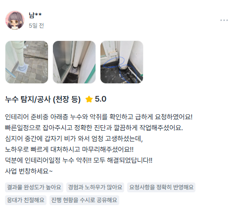
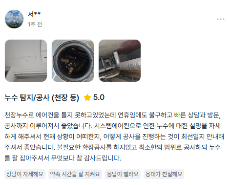
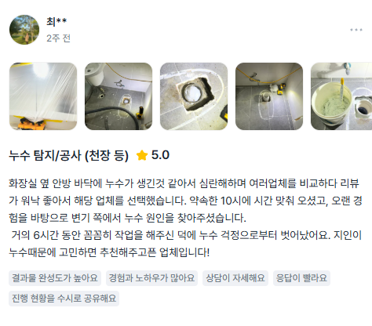
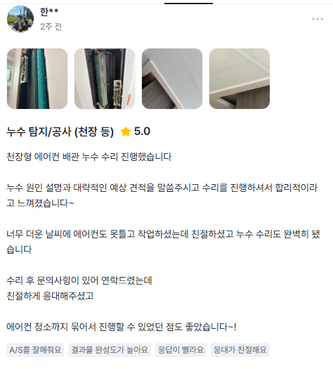
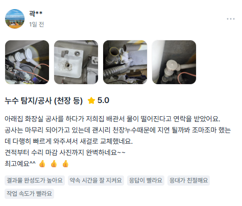
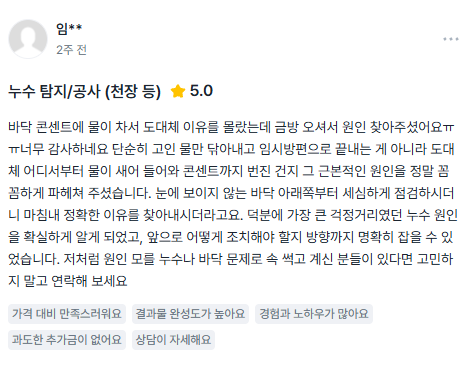
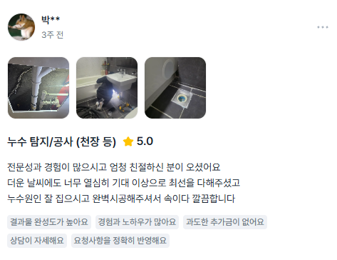
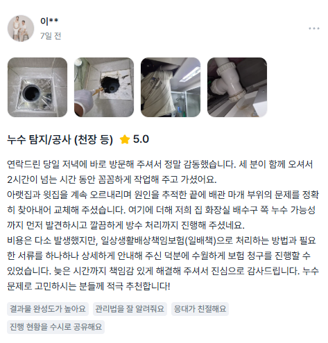
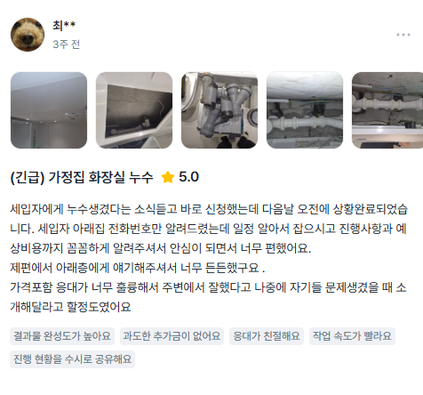
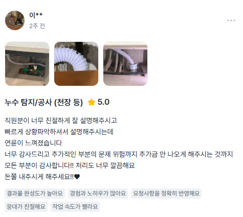
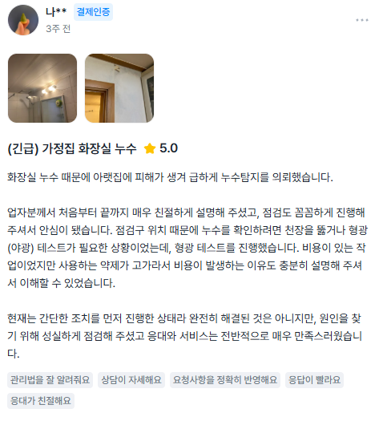
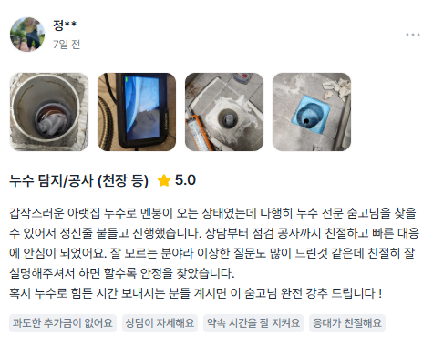
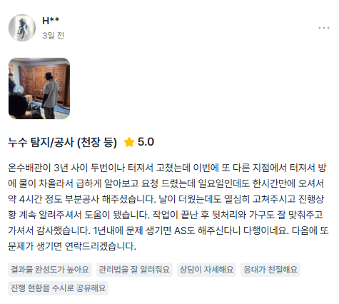
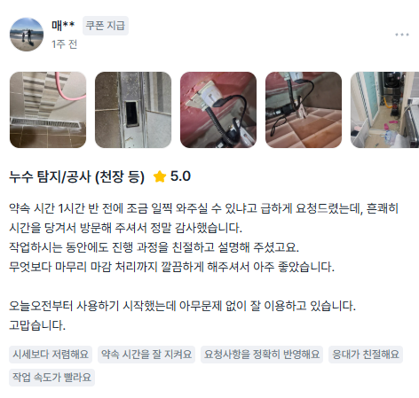
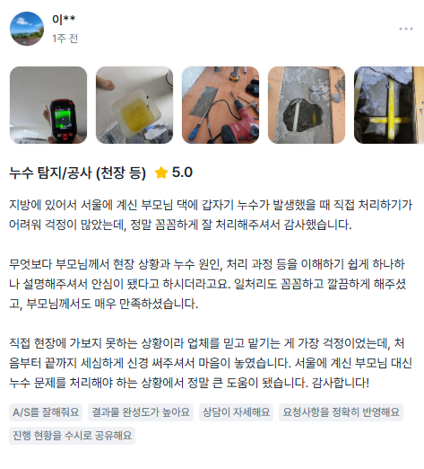
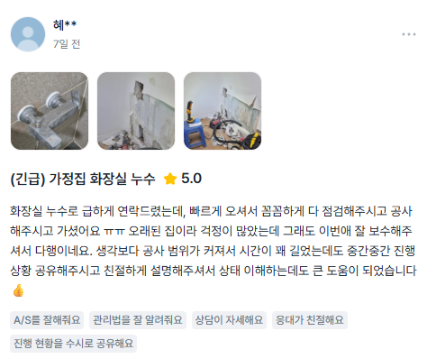
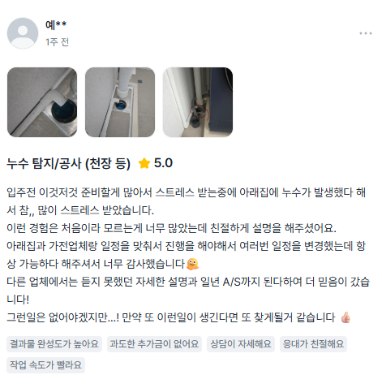
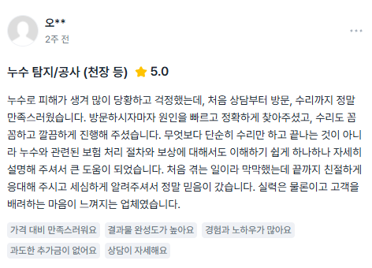
양재동 누수탐지·배관수리 출장
양재동과 인접한 서초동·우면동·도곡동·개포동·염곡동 등도 함께 방문하며, 서울 전지역 출장 가능합니다
도심권 · 종로구 / 중구 / 용산구
종로구 청운동·효자동·사직동·삼청동·가회동·안국동·이화동·혜화동·명륜동·창신동·숭인동·교남동·평창동·부암동·구기동·무악동 · 중구 소공동·회현동·명동·충무로·필동·장충동·광희동·을지로·신당동·황학동·중림동·순화동·정동·서소문동 · 용산구 후암동·남영동·용산동·청파동·원효로·문배동·한강로·이촌동·이태원동·한남동·보광동·서빙고동·용문동·효창동·도원동
동북권 · 성동 / 광진 / 동대문 / 중랑 / 성북 / 강북 / 도봉 / 노원
성동구 왕십리동·도선동·마장동·사근동·행당동·응봉동·금호동·옥수동·성수동·송정동·용답동 · 광진구 중곡동·능동·구의동·광장동·자양동·화양동·군자동 · 동대문구 신설동·용두동·제기동·전농동·답십리동·장안동·청량리동·회기동·휘경동·이문동 · 중랑구 면목동·상봉동·중화동·묵동·망우동·신내동 · 성북구 성북동·돈암동·삼선동·동선동·안암동·보문동·정릉동·길음동·종암동·월곡동·장위동·석관동 · 강북구 미아동·번동·수유동·우이동 · 도봉구 쌍문동·방학동·창동·도봉동 · 노원구 월계동·공릉동·하계동·중계동·상계동
서북권 · 은평구 / 서대문구 / 마포구
은평구 녹번동·불광동·갈현동·구산동·대조동·응암동·역촌동·신사동·증산동·수색동·진관동 · 서대문구 충정로·천연동·북아현동·홍제동·대현동·신촌동·연희동·홍은동·남가좌동·북가좌동·창천동 · 마포구 아현동·공덕동·도화동·용강동·대흥동·염리동·신수동·창전동·상수동·서교동·동교동·합정동·망원동·연남동·성산동·상암동
서남권 · 양천 / 강서 / 구로 / 금천 / 영등포 / 동작 / 관악
양천구 목동·신정동·신월동 · 강서구 염창동·등촌동·화곡동·가양동·마곡동·발산동·공항동·방화동·개화동·우장산동 · 구로구 신도림동·구로동·가리봉동·고척동·개봉동·오류동·궁동·온수동·천왕동·항동 · 금천구 가산동·독산동·시흥동 · 영등포구 영등포동·여의도동·당산동·도림동·문래동·양평동·신길동·대림동 · 동작구 노량진동·상도동·본동·흑석동·동작동·사당동·대방동·신대방동 · 관악구 봉천동·신림동·남현동
동남권 · 서초구 / 강남구 / 송파구 / 강동구
서초구 서초동·잠원동·반포동·방배동·양재동·우면동·원지동·염곡동·신원동·내곡동 · 강남구 역삼동·개포동·청담동·삼성동·대치동·신사동·논현동·압구정동·세곡동·자곡동·일원동·수서동·도곡동 · 송파구 잠실동·신천동·풍납동·송파동·석촌동·삼전동·가락동·문정동·장지동·거여동·마천동·방이동·오금동 · 강동구 명일동·고덕동·상일동·길동·둔촌동·암사동·성내동·천호동·강일동
현장 작업사진
최첨단 고가 장비로 전문가가 정확하게 진단하고 작업합니다
제공 서비스
누수탐지부터 설비 전반까지 전문적으로 해결합니다
누수탐지·검사
수도계량기 이상, 천장·벽·바닥 누수의 원인과 위치를 정밀 탐지합니다
- 누수탐지·누수검사
- 천장누수·아랫집누수
- 벽·바닥·마루누수
- 수도계량기누수·수도요금 증가
막힘 해결
하수구·변기·싱크대·배수구 막힘과 역류를 빠르게 처리합니다
- 하수구 막힘·역류
- 변기 막힘·역류
- 싱크대 막힘·역류
- 세면대·욕실 배수구 막힘
배관 수리·공사
노후·파손된 배관을 수리·교체하고 누수공사까지 마무리합니다
- 수도배관 수리·교체
- 누수공사·재시공
- 동파·해빙·언수도
- 에어컨 드레인 누수
배관 누수
온수·냉수·난방배관 등 매립 배관의 누수 여부와 위치를 점검합니다
- 온수배관 누수
- 냉수·수도배관 누수
- 난방배관 누수
- 욕실·화장실 누수
수전·위생기기
수전·수도꼭지·양변기의 누수 수리와 교체 작업을 진행합니다
- 수전·수도꼭지 교체
- 수전 누수·수리
- 세면대·양변기 교체
- 앵글밸브·배수트랩
하수구 고압세척
반복되는 막힘·역류를 고압세척으로 배관 내부까지 뚫어냅니다
- 하수구 고압세척
- 반복되는 막힘·역류
- 기름·이물질 제거
- 상가·건물 공용배관
양재동 증상별 서비스
겪고 계신 증상을 선택하면 안내 내용을 볼 수 있습니다
양재동 누수탐지·누수검사
양재동에서 물이 새는 위치를 알기 어렵거나 누수가 의심될 경우 배관 상태와 현장 증상을 확인하여 누수 여부와 위치를 점검합니다. 양재동 아파트·빌라·주택·상가 등의 누수탐지 및 누수검사를 진행합니다.
양재동 천장누수·아랫집누수
양재동 아랫집 천장에 물자국, 곰팡이, 습기 또는 물떨어짐이 발생했다면 윗집 욕실이나 수도·온수·난방배관 등의 누수 여부를 확인합니다. 천장누수 원인을 점검하고 필요한 누수공사를 진행합니다.
양재동 벽누수·바닥누수·마루누수
양재동에서 벽지가 젖거나 바닥에 습기가 생기고 마루가 변색되거나 들뜨는 증상이 있다면 매립된 수도배관 등의 누수를 확인합니다.
양재동 수도계량기 누수·수도요금 증가
양재동에서 물을 사용하지 않는데 수도계량기가 계속 돌아가거나 수도요금이 평소보다 갑자기 많이 나왔다면 누수를 의심할 수 있습니다. 수도계량기 움직임과 배관 상태를 확인하여 수도배관 누수 여부를 점검합니다.
양재동 온수배관 누수
양재동에서 온수배관 누수가 발생하면 수도계량기 움직임, 바닥 습기, 보일러 주변 이상 등의 증상이 나타날 수 있습니다. 온수배관의 누수 여부와 위치를 점검하고 필요한 배관수리를 진행합니다.
양재동 냉수·수도배관 누수
양재동 냉수배관과 수도배관에서 발생하는 누수를 점검합니다. 배관 상태와 현장 증상을 확인하여 누수 위치를 찾고 손상된 수도배관의 수리 또는 교체를 진행합니다.
양재동 난방배관 누수
양재동에서 보일러 물을 자주 보충하거나 바닥 난방배관에서 누수가 의심되는 경우 배관 상태를 점검하여 누수 여부와 위치를 확인합니다.
양재동 욕실·화장실 누수
양재동 욕실 바닥, 변기 주변, 세면대, 샤워수전, 매립 수도배관 등 화장실에서 발생하는 다양한 누수 원인을 점검합니다.
양재동 수도배관 수리·교체
양재동에서 노후되거나 파손된 수도배관, 냉수배관, 온수배관 등의 문제를 확인하고 필요한 구간을 수리하거나 교체합니다.
양재동 하수구 막힘·역류
양재동에서 물이 천천히 내려가거나 하수구에서 물이 역류하는 경우 배수배관의 막힘 상태를 확인하고 필요한 작업을 진행합니다.
양재동 하수구 고압세척
양재동에서 배관 내부에 쌓인 이물질이나 오염으로 뚫어도 자꾸 막히고 역류가 반복되는 경우 현장 상태에 따라 고압세척 작업을 진행합니다.
양재동 싱크대 막힘·역류
양재동에서 싱크대 물이 잘 내려가지 않거나 배수가 역류하는 경우 주방 배수배관의 막힘 상태를 확인하여 처리합니다.
양재동 변기 막힘·역류
양재동에서 변기 물이 내려가지 않거나 물이 차오르고 역류하는 경우 변기와 연결 배관의 막힘 상태를 확인하여 처리합니다.
양재동 세면대·욕실 배수구 막힘
양재동에서 세면대 또는 욕실 배수구의 배수가 느리거나 막힌 경우 배수구와 연결 배관을 확인하여 막힘을 처리합니다.
양재동 수전·수도꼭지 교체
양재동에서 주방수전, 세면대수전, 샤워수전, 수도꼭지 등의 고장이나 노후로 교체가 필요한 경우 현장에 맞는 수전으로 교체합니다.
양재동 수전 누수·수리
양재동에서 수전에서 물이 계속 떨어지거나 연결부위에서 물이 새는 경우 수전과 연결부속의 상태를 확인하여 수리 또는 교체합니다.
양재동 동파·해빙·언수도
양재동에서 겨울철 수도배관이 얼어 물이 나오지 않는 경우 동결된 배관 상태를 확인하고 해빙 작업을 진행합니다. 동파로 배관이 손상된 경우 필요한 배관수리도 진행합니다.
양재동 에어컨 드레인 누수·물떨어짐
양재동에서 여름철 에어컨 사용 중 천장이나 벽에서 물이 떨어지는 경우 에어컨 드레인 배관의 막힘·이탈·누수 여부 등을 확인합니다.